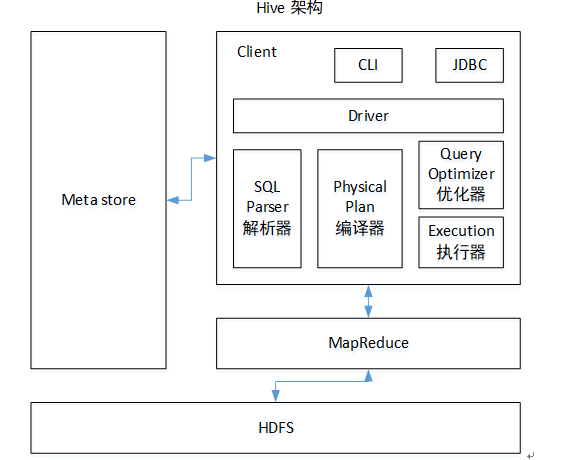
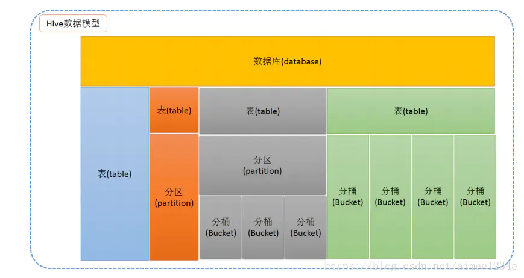
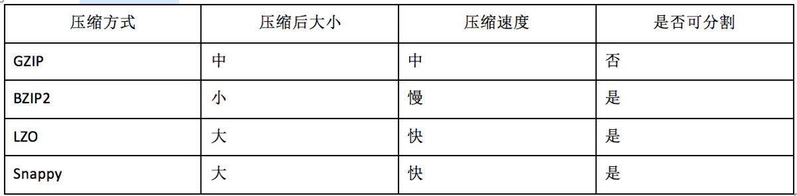
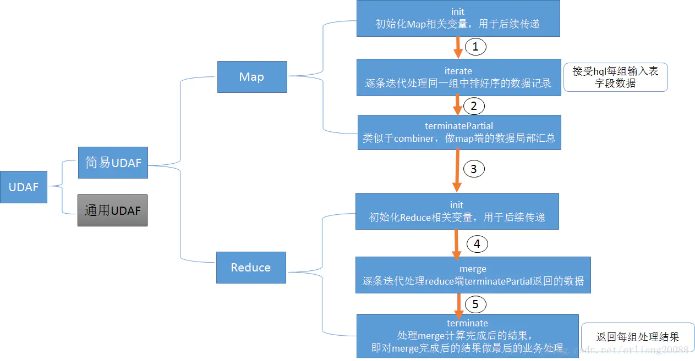
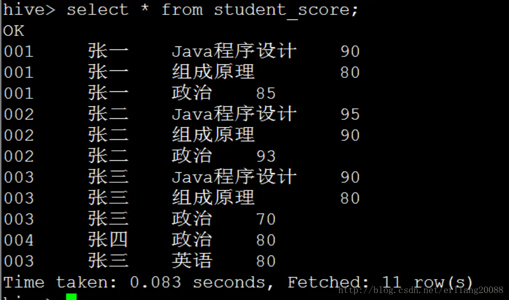
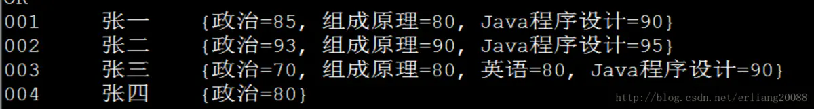

大数据003hive基础知识
1.什么是Hive
Hive是由Facebook开源用于解决海量结构化日志的数据统计；Hive是基于Hadoop的一个数据仓库工具，可以将结构化的数据文件映射 成一张表，并提供类SQL查询功能，底层计算引擎默认为Hadoop的MapReduce（本质是将sql转化成mapreduce程序），可以将引擎更换为Spark/Tez；
2.Hive架构

如图中所示，Hive通过给用户提供的一系列交互接口，接收到用户的指令(SQL)，使用自己的Driver，结合元数据(MetaStore)，将这些指令翻译成MapReduce，提交到Hadoop中执行，最后，将执行返回的结果输出到用户交互接口。
-
用户接口：Client
CLI（hive shell）、JDBC/ODBC(java访问hive)、WEBUI（浏览器访问hive）
-
元数据：Metastore
元数据包括：表名、表所属的数据库（默认是default）、表的拥有者、列/分区字段、表的类型（是否是外部表）、表的数据所在目录等；
默认存储在自带的derby数据库中，推荐使用MySQL存储Metastore
参考Hive元数据表结构
-
Hadoop
使用HDFS进行存储，使用MapReduce进行计算。
-
驱动器：Driver
（1）解析器（SQL Parser）：将SQL字符串转换成抽象语法树AST，这一步一般都用第三方工具库完成，比如antlr；对AST进行语法分析，比如表是否存在、字段是否存在、SQL语义是否有误。
（2）编译器（Physical Plan）：将AST编译生成逻辑执行计划。
（3）优化器（Query Optimizer）：对逻辑执行计划进行优化。
（4）执行器（Execution）：把逻辑执行计划转换成可以运行的物理计划。对于Hive来说，就是MR/Spark。
3.Hive优点
- 操作接口采用类SQL语法，提供快速开发的能力(简单、容易上手)；
- 避免了去写MapReduce，减少开发人员的学习成本；
- 统一的元数据管理，可与impala/spark等共享元数据；
- 易扩展(HDFS+MapReduce：可以扩展集群规模；支持自定义函数)；
4.Hive使用场景
- 数据的离线处理；比如：日志分析，海量结构化数据离线分析…
- Hive的执行延迟比较高，因此hive常用于数据分析的，对实时性要求不高的场合；
- Hive优势在于处理大数据，对于处理小数据没有优势，因为Hive的执行延迟比较高。
5.Hive的执行流程
- HiveQL通过CLI/web UI或者thrift 、 odbc 或 jdbc接口的外部接口提交，
- 经过complier编译器，运用Metastore中的元数据进行类型检测和语法分析，生成一个逻辑方案(logical plan),
- 然后通过简单的优化处理，产生一个以有向无环图DAG数据结构形式展现的map-reduce任务。
6.SQL转化成MapReduce过程
Hive是如何将SQL转化为MapReduce任务的，整个编译过程分为六个阶段：
- Antlr定义SQL的语法规则，完成SQL词法，语法解析，将SQL转化为抽象语法树AST Tree；
- 遍历AST Tree，抽象出查询的基本组成单元QueryBlock；
- 遍历QueryBlock，翻译为执行操作树OperatorTree；
- 逻辑层优化器进行OperatorTree变换，合并不必要的ReduceSinkOperator，减少shuffle数据量；
- 遍历OperatorTree，翻译为MapReduce任务；
- 物理层优化器进行MapReduce任务的变换，生成最终的执行计划。
7.Hive的数据模型

数据模型组成及应用场景
Hive的数据模型主要有：database、table、partition、bucket四部分；
数据模型之database
database：相当于关系型数据库中的命名空间，作用是将数据库应用隔离到不同的数据库模式中，
hive提供了create database dbname、use dbname 以及drop database dbname的语句；
数据模型之table
table：表是由存储的数据以及描述表的一些元数据组成。数据存储再分布式文件系统中，元数据存储在关系型数据库中；
hive表分四种：
- MANGED_TABLE :内部表
- EXTERNAL_TABLE：外部表
- INDEX_TABLE：索引表
- VIRTUAL_VIEW ：视图表
查看表的具体信息使用：desc tablename或者 desc formatted tablename
数据模型之partition
hive的分区是根据某列的值进行粗略的划分，每个分区对应HDFS上的一个目录；
数据模型之bucket
- 要使用hive的分桶功能，首先需要打开hive对痛的控制 set hive.enforce.bucketing=true;
- bucket是按照指定值进行hash，每个桶就是表目录里的一个文件
8.Hive中的文件格式
1. TEXTFILE,行存储
- 文本格式，Hive的默认格式，数据不压缩，磁盘开销大、数据解析开销大。
- 对应的hive API为：org.apache.hadoop.mapred.TextInputFormat和org.apache.hive.ql.io.HiveIgnoreKeyTextOutputFormat；
- 可结合Gzip、Bzip2使用(系统自动检查，执行查询时自动解压)，但是使用这种方式，hive不会对数据进行切分，从而无法对数据进行并行操作
2. SequenceFile,行存储
- Hadoop提供的二进制文件，Hadoop支持的标准文件；
- 数据直接序列化到文件中，SequenceFile文件不能直接查看，可以通过Hadoop fs -text查看；
- SequenceFile具有使用方便、可分割、可压缩、可进行切片，压缩支持NONE、RECORD、BLOCK（优先）；
- 对应hive API：org.apache.hadoop.mapred.SequenceFileInputFormat和org.apache.hadoop.hive.ql.io.HiveSequenceFileOutputFormat
3. RCFILE
- rcfile是一种行列存储相结合的存储方式，先将数据按行进行分块再按列式存储，保证同一条记录在一个块上，避免读取多个块，有利于数据压缩和快速进行列存储；
- 对应 hive API为：org.apache.hadoop.hive.ql.io.RCFileInputFormat和org.apache.hadoop.hive.ql.io.RCFileOutputFormat
4. orcfile
- orcfile式对rcfile的优化，可以提高hive的读写、数据处理性能、提供更高的压缩效率；
- 优点：
- 每个task只输出单个文件，减少namenode负载；
- 支持各种复杂的数据类型，比如：datetime，decima以及复杂类型struct、list、map；
- 文件中存储了一些轻量级的索引数据；
- 基于数据类型的块模式压缩：integer类型的列用行程长度编码，string类型的列使用字典编码；
- 用多个相互独立的recordReaders并行读相同的文件
- 无需扫描markers即可分割文件
- 绑定读写所需内存
- metadata存储用protocol buffers，支持添加和删除列
5. parquet
Parquet也是一种列式存储，同时具有很好的压缩性能；同时可以减少大量的表扫描和反序列化的时间。
总结
- textfile 存储空间消耗比较大，并且压缩的text 无法分割和合并 查询的效率最低,可以直接存储，加载数据的速度最高；
- sequencefile 存储空间消耗最大,压缩的文件可以分割和合并 查询效率高，需要通过text文件转化来加载；
- orcfile, rcfile存储空间最小，查询的效率最高 ，需要通过text文件转化来加载，加载的速度最低；
- parquet格式是列式存储，有很好的压缩性能和表扫描功能；
SequenceFile,ORCFile(ORC)，rcfile格式的表不能直接从本地文件导入数据，数据要先导入到textfile格式的表中，然后再从textfile表中导入到SequenceFile,ORCFile(ORC)，rcfile表中。
Hive支持的压缩格式
Hive支持的压缩格式为Gzip、Bzip2、lzo、snappy 
Hive内外表区分方法
- 查看hive元数据：进入mysql中hive元数据库，查看TBLS表，查看对应的表名和表类型；
- 在hive-cli界面：desc extended tablename，查看TableType，一般在展示结果的最后显示；
- 在hive-cli界面：desc formatted tablename，一个格式化的信息，查看TableType；
Hive内外表特点
内部表：
- hive创建表的时候默认是MANAGED_TABLE:内部表
- hive创建表的时候如果指定location，当进行load操作的时候，hdfs上的原始数据会迁移到location指定的目录下；如果创建表的时候没有指定location，数据会迁移到hive-site.xml中配置好的数据存储路径；
- hive内部表删除表的时候会将hdfs目录的数据和元数据信息全部删除；
外部表：
- 创建外部表的时候需要指定location的位置；
- hive删除表的时候只会讲元数据信息删除，并不会删除HDFS上的数据；
- 生成环境中，建议使用hive外部表；
Hive视图特点
- View是逻辑存在，Hive暂不支持物化视图(1.0.3)
- View只读，不支持LOAD/INSERT/ALTER。需要改变View定义，可以是用Alter View
- View内可能包含ORDER BY/LIMIT语句，假如一个针对view的查询也包含这些语句， 则view中的语句优先级高。例如，定义view数据为limit 10， 针对view的查询limit 20，则最多返回10条数据。
- Hive支持迭代视图。
- Hive中视图的查询和普通查询类似，查询时把表名更换为视图名即可。
Hive视图创建
视图view和table一样，可以指定database；
创建视图
|
|
删除视图
|
|
修改视图
|
|
Hive视图应用场景
- 数据仓库中维度角色扮演和维度子维度时可以采用视图的方式保证维度的一致性；
- 当Hive中的查询变得很长或复杂时，通过视图将这个查询语句分割成多个小的、更可控的片段可以降低这种复杂度；
- Hive中需要通过视图限制基于条件过滤的数据时；
Hive常用命令及作用
|
|
Hive常用的10个系统函数及作用
聚合函数
函数处理的数据粒度为多条记录。
- sum()—求和
- count()—求数据量
- avg()—求平均直
- distinct—求不同值数
- min—求最小值
- max—求最人值
窗口分析函数
- RANK
- ROW_NUMBER
- DENSE_RANK
- CUME_DIST
- PERCENT_RANK
字符串连接函数
- concat
- concat_ws
- collect_list
- collect_set
其他函数
- cast -类型转换
- if判断 – if(con,'','');
UDF
User-Defined-Function 自定义函数 、一进一出；
背景
系统内置函数无法解决实际的业务问题，需要开发者自己编写函数实现自身的业务实现诉求。
应用场景非常多，面临的业务不同导致个性化实现很多，故udf很需要。
意义
函数扩展得到解决，极大丰富了可定制化的业务需求。
IO要求-要解决的问题
- in:out=1:1,只能输入一条记录当中的数据，同时返回一条处理结果。
- 属于最常见的自定义函数，像cos,sin,substring,indexof等均是如此要求
实现步骤(Java创建自定义UDF类)
- 自定义一个java类
- 继承UDF类
- 重写evaluate方法
- 打包类所在项目成一个all-in-one的jar包并上传到hive所在机器
- 在hive中执行add jar操作，将jar加载到classpath中。
- 在hive中创建模板函数，使得后边可以使用该函数名称调用实际的udf函数
- hive sql中像调用系统函数一样使用udf函数
代码实现
|
|
UDAF
自定义udaf函数self_count，实现系统udaf count的功能
Input/Output要求-要解决的问题
- in:out=n:1,即接受输入N条记录当中的数据，同时返回一条处理结果。
- 属于最常见的自定义函数，像count,sum,avg,max等均是如此要求
实现步骤
- 自定义一个java类
- 继承UDAF类
- 内部定义一个静态类，实现UDAFEvaluator接口
- 实现方法init,iterate,terminatePartial,merge,terminate，共5个方法. 详见下图
- 在hive中执行add jar操作，将jar加载到classpath中。
- 在hive中创建模板函数，使得后边可以使用该函数名称调用实际的udf函数
- hive sql中像调用系统函数一样使用udaf函数
 业务测试
- 输入： 
- 输出 
- UDAF代码开发
|
|
测试sql语句
|
|
UDTF
- User-Defined Table-Generating Functions
- 要解决一行输入多行输出的问题，问题的应用场景不少
- 用udtf解决一行输入多行输出的不多，往往被lateral view explode+udf等替代实现，比直接用udtf会更简单、直接一些
Hive设置配置参数的方法
Hive提供三种可以改变环境变量的方法，分别是：
- 修改${HIVE_HOME}/conf/hive-site.xml配置文件；
- 命令行参数；
- 在已经进入cli时进行参数声明。
hive-site.xml配置参数
在Hive中，所有的默认配置都在 “{HIVE_HOME}/conf/hive-default.xml “文件中，如果需要对默认的配置进行修改，可以创建一个 “hive-site.xml” 文件，放在 " {HIVE_HOME}/conf"目录下。里面可以对一些配置进行个性化设定。在hive-site.xml的格式如下：
|
|
所有的配置都是放在标签之间，
一个configuration标签里面可以存在多个标签。
标签里面就是我们想要设定属性的名称；
标签里面是我们想要设定的值；
标签是描述在这个属性的，可以不写。
绝大多少配置都是在xml文件里面配置的，因为在这里做的配置都全局用户都生效，而且是永久的。
用户自定义配置会覆盖默认配置。
另外，Hive也会读入Hadoop的配置，因为Hive是作为Hadoop的客户端启动的，Hive的配置会覆盖Hadoop的配置。
命令行参数
在启动Hive cli的时候进行配置，可以在命令行添加-hiveconf param=value来设定参数，例如：
|
|
这样在Hive中所有MapReduce作业都提交到队列queue1中。这一设定对本次启动的会话有效，下次启动需要重新配置。
进入cli时候声明
在已经进入cli时进行参数声明，可以在HQL中使用SET关键字设定参数，例如：
|
|
上述三种设定方式的优先级依次递增。即参数声明覆盖命令行参数，命令行参数覆盖配置文件设定。
8个常用的配置参数
|
|
数据倾斜产生的原因
数据倾斜的原因很大部分是join倾斜和聚合倾斜两大类
1.Hive倾斜之group by聚合倾斜
原因：
- 分组的维度过少，每个维度的值过多，导致处理某值的reduce耗时很久；
- 对一些类型统计的时候某种类型的数据量特别多，其他的数据类型特别少。当按照类型进行group by的时候，会将相同的group by字段的reduce任务需要的数据拉取到同一个节点进行聚合，而当其中每一组的数据量过大时，会出现其他组的计算已经完成而这个reduce还没有计算完成，其他的节点一直等待这个节点的任务执行完成，所以会一直看到map 100% reduce99%的情况；
解决方法：
- set hive.map.aggr=true;
- set hive.groupby.skewindata=true;
原理：
- hive.map.aggr=true 这个配置代表开启map端聚合；
- hive.groupby.skewindata=true，当选项设定为true，生成的查询计划会有两个MR Job。当第一个MR Job中，Map的输出结果结合会随机分布到Reduce中，每个Reduce做部分聚合操作，并输出结果。这样处理的结果是相同的Group By Key有可能被分发到不同的Reduce中，从而达到负载均衡的目的。第二个MR Job再根据预处理的数据结果按照Group By Key分布到reduce中，这个过程可以保证相同的key被分到同一个reduce中，最后完成最终的聚合操作。
2.Hive倾斜之Map和Reduce优化
- 原因：当出现小文件过多，需要合并小文件。可以通过set hive.merge.mapredfiles=true来解决；
- 原因：输入数据存在大块和小块的严重问题，比如 说：一个大文件128M，还有1000个小文件，每 个1KB。 解决方法：任务输入前做文件合并，将众多小文件合并成一个大文件。通过set hive.merge.mapredfiles=true解决；
- 原因：单个文件大小稍稍大于配置的block块的大小，此时需要适当增加map的个数。解决方法：set mapred.map.tasks的个数；
- 原因：文件大小适中，但是map端计算量非常大，如：select id,count(*),sum(case when…),sum(case when …)…需要增加map个数。解决方法：set mapred.map.tasks个数，set mapred.reduce.tasks个数；
3.Hive倾斜之HQL中包含count(distinct)时
- 如果数据量非常大，执行如select a,count(distinct b) from t group by a;类型的sql时，会出现数据倾斜的问题。
- 解决方法：使用sum…group by代替。如：select a,sum(1) from(select a,b from t group by a,b) group by a;
4.Hive倾斜之HQL中join优化
- 当遇到一个大表和一个小表进行join操作时。使用mapjoin将小表加载到内存中。如：select /*+ MAPJOIN(a) */ a.c1, b.c1 ,b.c2 from a join b where a.c1 = b.c1;
- 遇到需要进行join，但是关联字段有数据为null，如表一的id需要和表二的id进行关联；
解决方法1：id为null的不参与关联
|
|
解决方法2： 给null值分配随机的key值
|
|
5.合理设置Map数
对上文描述的总结
-
通常情况下，作业会通过input的目录产生一个或者多个map任务。
主要的决定因素有：input的文件总个数，input的文件大小，集群设置的文件块大小。
-
是不是map数越多越好？ 答案是否定的。如果一个任务有很多小文件（远远小于块大小128m），则每个小文件也会被当做一个块，用一个map任务来完成，而一个map任务启动和初始化的时间远远大于逻辑处理的时间，就会造成很大的资源浪费。而且，同时可执行的map数是受限的。
-
是不是保证每个map处理接近128m的文件块，就高枕无忧了？ 答案也是不一定。比如有一个127m的文件，正常会用一个map去完成，但这个文件只有一个或者两个小字段，却有几千万的记录，如果map处理的逻辑比较复杂，用一个map任务去做，肯定也比较耗时。
针对上面的问题2和3，我们需要采取两种方式来解决：即减少map数和增加map数；
Hive优化策略
Hive的优化策略大致分为：配置优化(hive-site.xml和hive-cli执行前配置)、表优化、hive数据倾斜解决方案。
1.配置优化
a.Fetch抓取配置
- Fetch抓取是指，Hive中对某些情况的查询可以不必使用MapReduce计算。例如：SELECT * FROM employees;在这种情况下，Hive可以简单地读取employee对应的存储目录下的文件，然后输出查询结果到控制台。
- 在hive-default.xml.template文件中hive.fetch.task.conversion默认是more，老版本hive默认是minimal，该属性修改为more以后，在全局查找、字段查找、limit查找等都不走mapreduce。
|
|
b.开启Hive的本地模式
- 大多数的Hadoop Job是需要Hadoop提供的完整的可扩展性来处理大数据集的。不过，有时Hive的输入数据量是非常小的。在这种情况下，为查询触发执行任务消耗的时间可能会比实际job的执行时间要多的多。对于大多数这种情况，Hive可以通过本地模式在单台机器上处理所有的任务。对于小数据集，执行时间可以明显被缩短。
- 用户可以通过设置hive.exec.mode.local.auto的值为true，来让Hive在适当的时候自动启动这个优化。
c.开启Hive的并行执行
- Hive会将一个查询转化成一个或者多个阶段。这样的阶段可以是MapReduce阶段、抽样阶段、合并阶段、limit阶段。或者Hive执行过程中可能需要的其他阶段。默认情况下，Hive一次只会执行一个阶段。不过，某个特定的job可能包含众多的阶段，而这些阶段可能并非完全互相依赖的，也就是说有些阶段是可以并行执行的，这样可能使得整个job的执行时间缩短。不过，如果有更多的阶段可以并行执行，那么job可能就越快完成。
- 通过设置参数hive.exec.parallel值为true，就可以开启并发执行。不过，在共享集群中，需要注意下，如果job中并行阶段增多，那么集群利用率就会增加。
- 设置参数：
- set hive.exec.parallel=true; //打开任务并行执行
- set hive.exec.parallel.thread.number=16; //同一个sql允许最大并行度，默认为8。
d.Hive的严格模式
- Hive提供了一个严格模式，可以防止用户执行那些可能意向不到的不好的影响的查询。
- 通过设置属性hive.mapred.mode值为默认是非严格模式nonstrict 。
开启严格模式需要修改hive.mapred.mode值为strict，开启严格模式可以禁止3种类型的查询。
- 对于分区表，除非where语句中含有分区字段过滤条件来限制范围，否则不允许执行。
- 对于使用了order by语句的查询，要求必须使用limit语句。
- 限制笛卡尔积的查询。
e.JVM重用
- JVM重用是Hadoop调优参数的内容，其对Hive的性能具有非常大的影响，特别是对于很难避免小文件的场景或task特别多的场景，这类场景大多数执行时间都很短。
- Hadoop的默认配置通常是使用派生JVM来执行map和Reduce任务的。这时JVM的启动过程可能会造成相当大的开销，尤其是执行的job包含有成百上千task任务的情况。JVM重用可以使得JVM实例在同一个job中重新使用N次。N的值可以在Hadoop的mapred-site.xml文件中进行配置。通常在10-20之间，具体多少需要根据具体业务场景测试得出。
|
|
- 这个功能的缺点是，开启JVM重用将一直占用使用到的task插槽，以便进行重用，直到任务完成后才能释放。如果某个“不平衡的”job中有某几个reduce task执行的时间要比其他Reduce task消耗的时间多的多的话，那么保留的插槽就会一直空闲着却无法被其他的job使用，直到所有的task都结束了才会释放。
f.开启Hive的推测执行
- 在分布式集群环境下，因为程序Bug（包括Hadoop本身的bug），负载不均衡或者资源分布不均等原因，会造成同一个作业的多个任务之间运行速度不一致，有些任务的运行速度可能明显慢于其他任务（比如一个作业的某个任务进度只有50%，而其他所有任务已经运行完毕），则这些任务会拖慢作业的整体执行进度。为了避免这种情况发生，Hadoop采用了推测执行（Speculative Execution）机制，它根据一定的法则推测出“拖后腿”的任务，并为这样的任务启动一个备份任务，让该任务与原始任务同时处理同一份数据，并最终选用最先成功运行完成任务的计算结果作为最终结果。
- 设置开启推测执行参数：Hadoop的mapred-site.xml文件中进行配置
|
|
- 不过hive本身也提供了配置项来控制reduce-side的推测执行：
|
|
- 关于调优这些推测执行变量，还很难给一个具体的建议。如果用户对于运行时的偏差非常敏感的话，那么可以将这些功能关闭掉。如果用户因为输入数据量很大而需要执行长时间的map或者Reduce task的话，那么启动推测执行造成的浪费是非常巨大大。
g.压缩
开启Map输出阶段压缩
开启map输出阶段压缩可以减少job中map和Reduce task间数据传输量。具体配置如下：
|
|
开启Reduce输出阶段压缩
当Hive将输出写入到表中时，输出内容同样可以进行压缩。属性hive.exec.compress.output控制着这个功能。用户可能需要保持默认设置文件中的默认值false，这样默认的输出就是非压缩的纯文本文件了。用户可以通过在查询语句或执行脚本中设置这个值为true，来开启输出结果压缩功能。
|
|
2.Hive表优化
a.小表、大表join
- 将key相对分散，并且数据量小的表放在join的左边，这样可以有效减少内存溢出错误发生的几率；再进一步，可以使用Group让小的维度表（1000条以下的记录条数）先进内存。在map端完成reduce。
- 实际测试发现：新版的hive已经对小表JOIN大表和大表JOIN小表进行了优化。小表放在左边和右边已经没有明显区别。
b.大表join大表
- 空值过滤
- 有时join超时是因为某些key对应的数据太多，而相同key对应的数据都会发送到相同的reducer上，从而导致内存不够。此时我们应该仔细分析这些异常的key，很多情况下，这些key对应的数据是异常数据，我们需要在SQL语句中进行过滤。例如key对应的字段为空。
- 空key转换
- 有时虽然某个key为空对应的数据很多，但是相应的数据不是异常数据，必须要包含在join的结果中，此时我们可以表a中key为空的字段赋一个随机的值，使得数据随机均匀地分不到不同的reducer上。
c.MapJoin
- 如果不指定MapJoin或者不符合MapJoin的条件，那么Hive解析器会将Join操作转换成Common Join，即：在Reduce阶段完成join。容易发生数据倾斜。可以用MapJoin把小表全部加载到内存在map端进行join，避免reducer处理。
- 开启MapJoin参数设置：
- 设置自动选择Mapjoin
- set hive.auto.convert.join = true; 默认为true
- 大表小表的阈值设置（默认25M一下认为是小表）：
- set hive.mapjoin.smalltable.filesize=25000000;
d.Group By
- 默认情况下，Map阶段同一Key数据分发给一个reduce，当一个key数据过大时就倾斜了。
- 并不是所有的聚合操作都需要在Reduce端完成，很多聚合操作都可以先在Map端进行部分聚合，最后在Reduce端得出最终结果。
- 开启Map端聚合参数设置
-
是否在Map端进行聚合，默认为True
hive.map.aggr = true -
在Map端进行聚合操作的条目数目
hive.groupby.mapaggr.checkinterval = 100000 -
有数据倾斜的时候进行负载均衡（默认是false）
hive.groupby.skewindata = true -
当选项设定为 true，生成的查询计划会有两个MR Job。第一个MR Job中，Map的输出结果会随机分布到Reduce中，每个Reduce做部分聚合操作，并输出结果，这样处理的结果是相同的Group By Key有可能被分发到不同的Reduce中，从而```达到负载均衡的目的；第二个MR Job再根据预处理的数据结果按照Group By Key分布到Reduce中（这个过程可以保证相同的Group By Key被分布到同一个Reduce中），最后完成最终的聚合操作。
e.Count(Distinct) 去重统计
- 数据量小的时候无所谓，数据量大的情况下，由于COUNT DISTINCT操作需要用一个Reduce Task来完成，这一个Reduce需要处理的数据量太大，就会导致整个Job很难完成，一般COUNT DISTINCT使用先GROUP BY再COUNT的方式替换。
f.笛卡儿积
- 尽量避免笛卡尔积，join的时候不加on条件，或者无效的on条件，Hive只能使用1个reducer来完成笛卡尔积。
g.行列过滤
- 列处理：在SELECT中，只拿需要的列，如果有，尽量使用分区过滤，少用SELECT *。
- 行处理：在分区剪裁中，当使用外关联时，如果将副表的过滤条件写在Where后面，那么就会先全表关联，之后再过滤。
3.Hive数据倾斜解决
Hive中传入变量的方式
- 暴力替换
- 字符串替换
- 正则替换
- 模板引擎
- 系统环境变量
- shell环境变量：${env:varname}
- system系统变量：${system:varname}
- hive 命令参数
- hivevar方式：${hivevar:varname}
- hiveconf方式：${hiveconf:varname}
hive接收外部变量方式详解
- 使用Hive编写程序最常用的方法是将Hive语句写到文件中，然后使用hive -f filename.hql来批量执行查询语句。经常需要将外部参数传入到hql语句中替换其中的变量来动态执行任务，比如动态设定数据库名、表名、时间值、字段序列等变量，以达到脚本泛化执行的目的。
- 在使用hive开发数据分析代码时，经常会遇到需要改变运行参数的情况，比如select语句中对日期字段值的设定，可能不同时间想要看不同日期的数据，这就需要能动态改变日期的值。如果开发量较大、参数多的话，使用变量来替代原来的字面值非常有必要，对传入的方式进行总结。
1-shell中设置变量，hive -e中直接使用
测试脚本
|
|
- 可以正常运行
- 由于hive自身是类SQL语言，缺乏shell的灵活性和对过程的控制能力，所以采用shell+hive的开发模式非常常见，在shell中直接定义变量，在hive -e语句中就可以直接引用；
注意
- 注意：使用 hiveconf 定义，在hive -e中是不能使用的
- 修改一下刚才的shell文件，采用-hiveconf的方法定义日期参数：
|
|
- 运行会失败，因为该脚本在shell环境中运行的，于是shell试图去解析{hiveconf:enter_school_date}和${hiveconf:min_age}变量，但是这两个SHELL变量并没有定义，所以会以空字符串放在这个位置。
2.使用-hiveconf定义，在SQL文件中使用
- 因为换行什么的很不方便，hive -e只适合写少量的SQL代码，所以一般都会写很多hql文件，然后使用hive –f 的方法来调用，这时候可以通过-hiveconf定义一些变量，然后在SQL中直接使用。
- 先编写shell文件
|
|
被调用脚本
use test;
select *
from student
where pdate='${hiveconf:enter_school_date}'
and sage > '${hiveconf:min_ag}'
limit 8;
3.使用hivevar，再sql文件中使用
- 在hql脚本中写使用set hivevar:varname的方式
- 定义脚本
|
|
sql脚本
use test;
set hivevar:center_school_date="20130920";
set hivevar:min_age="26";
select *
from student
where pdate='${hivevar:enter_school_date}'
and sage > '${hivevar:min_ag}'
limit 8;
Hive动态分区参数配置
- 往hive分区表中插入数据时，如果需要创建的分区很多，比如以表中某个字段进行分区存储，则需要复制粘贴修改很多sql去执行，效率低。因为hive是批处理系统，所以hive提供了一个动态分区功能，其可以基于查询参数的位置去推断分区的名称，从而建立分区。
使用动态分区表必须配置的参数
- set hive.exec.dynamic.partition =true（默认false）,表示开启动态分区功能；
- set hive.exec.dynamic.partition.mode = nonstrict(默认strict),表示允许所有分区都是动态的，否则必须有静态分区字段；
动态分区相关调优参数
- set hive.exec.max.dynamic.partitions.pernode=100 （默认100，一般可以设置大一点，比如1000）； 表示每个maper或reducer可以允许创建的最大动态分区个数，默认是100，超出则会报错。
- set hive.exec.max.dynamic.partitions =1000(默认值) ； 表示一个动态分区语句可以创建的最大动态分区个数，超出报错；
- set hive.exec.max.created.files =10000(默认) 全局可以创建的最大文件个数，超出报错。
动态分区表实践
默认已经hive的动态分区和nonstrict模式；
1.创建单一字段分区表
|
|
2.单个字段的动态分区
- 以city建立动态分区
|
|
- 要点：因为dpartition表中只有两个字段，所以当我们查询了三个字段时（多了city字段），所以系统默认以最后一个字段city为分区名，因为分区表的分区字段默认也是该表中的字段，且依次排在表中字段的最后面。所以分区需要分区的字段只能放在后面，不能把顺序弄错。如果我们查询了四个字段的话，则会报错，因为该表加上分区字段也才三个。要注意系统是根据查询字段的位置推断分区名的，而不是字段名称。
|
|
- 注意：使用，insert…select 往表中导入数据时，查询的字段个数必须和目标的字段个数相同，不能多，也不能少,否则会报错。但是如果字段的类型不一致的话，则会使用null值填充，不会报错。而使用load data形式往hive表中装载数据时，则不会检查。如果字段多了则会丢弃，少了则会null值填充。同样如果字段类型不一致，也是使用null值填充。
3.多个分区字段，实现半自动分区
|
|
4.多个分区字段，全部实现动态分区插入
|
|
- 注意:字段的个数和顺序不能弄错。
- 注意:动态分区字段的顺序
作者：李小李的路 链接：https://www.jianshu.com/p/94d4078453ab 来源：简书 著作权归作者所有。商业转载请联系作者获得授权，非商业转载请注明出处。